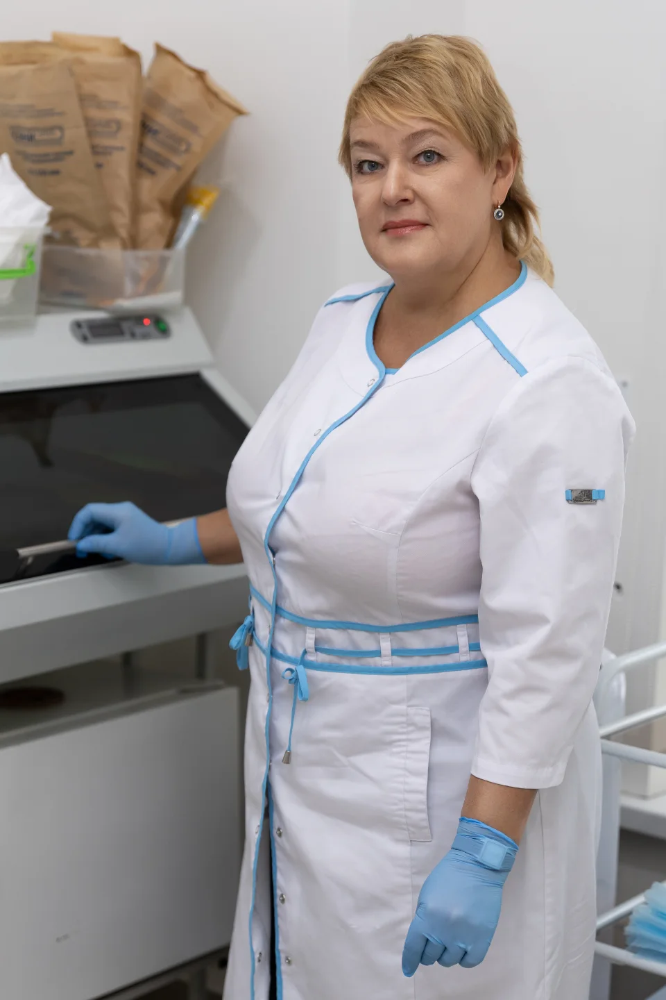
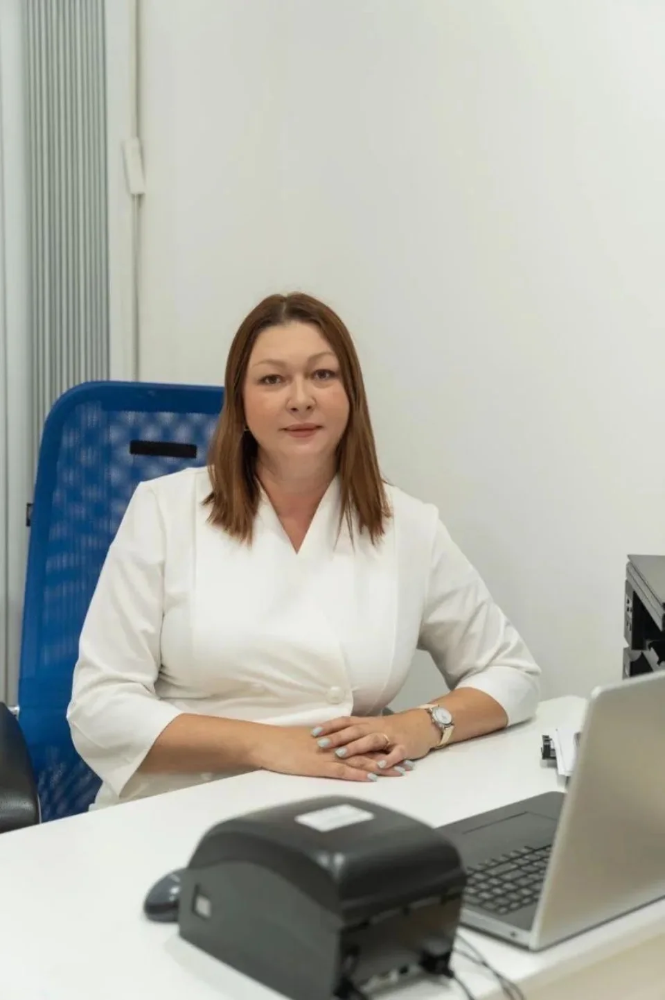
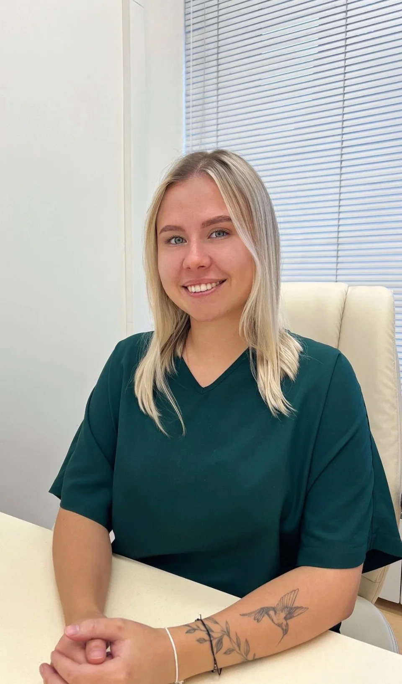
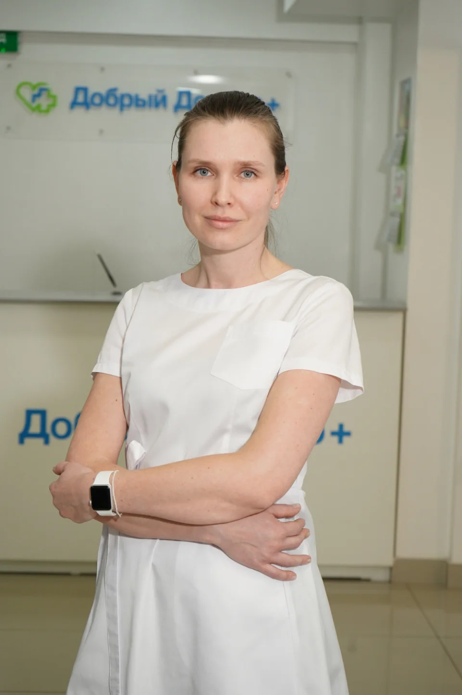

Гинеколог
Сухарева Дарья Олеговна
Принимает на улице Лермонтова, 69, а по четвергам — на улице Николая Гаврилова, 4.
Специалисты
Выберите специалиста по направлению, филиалу и формату приема. Карточки помогают быстро понять профиль врача и перейти к записи без лишних шагов.
Гинеколог
Принимает на улице Лермонтова, 69, а по четвергам — на улице Николая Гаврилова, 4.

Косметолог, дерматовенеролог, дерматолог
Консультации по состоянию кожи, косметология и дерматология.

Врач ультразвуковой диагностики
Ультразвуковая диагностика для взрослых и детей.

Гинеколог-эндокринолог
Приём гинеколога-эндокринолога по предварительной записи.

Гинеколог
Приём гинеколога по предварительной записи.
Медицинская сестра, косметология
Процедуры по назначению врача и работа в косметологии.

Невролог, детский невролог
Приём взрослых и детей по профилю неврологии.

Сосудистый хирург
Приём сосудистого хирурга по предварительной записи.

Врач ультразвуковой диагностики
Ультразвуковая диагностика по предварительной записи.
По выбранным фильтрам пока нет врача. Попробуйте другое направление или филиал.
Не знаете, к кому записаться?